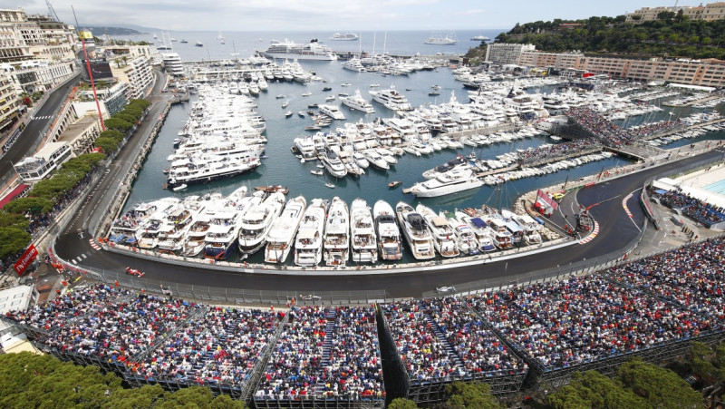
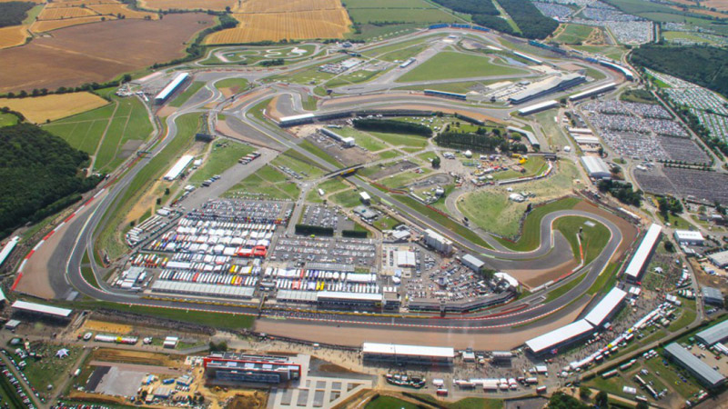
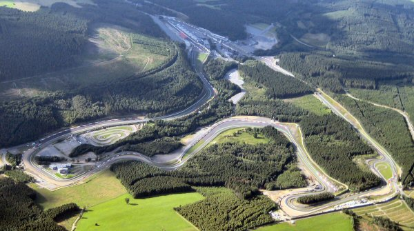
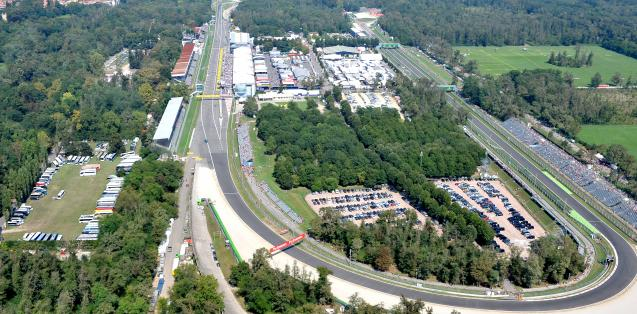
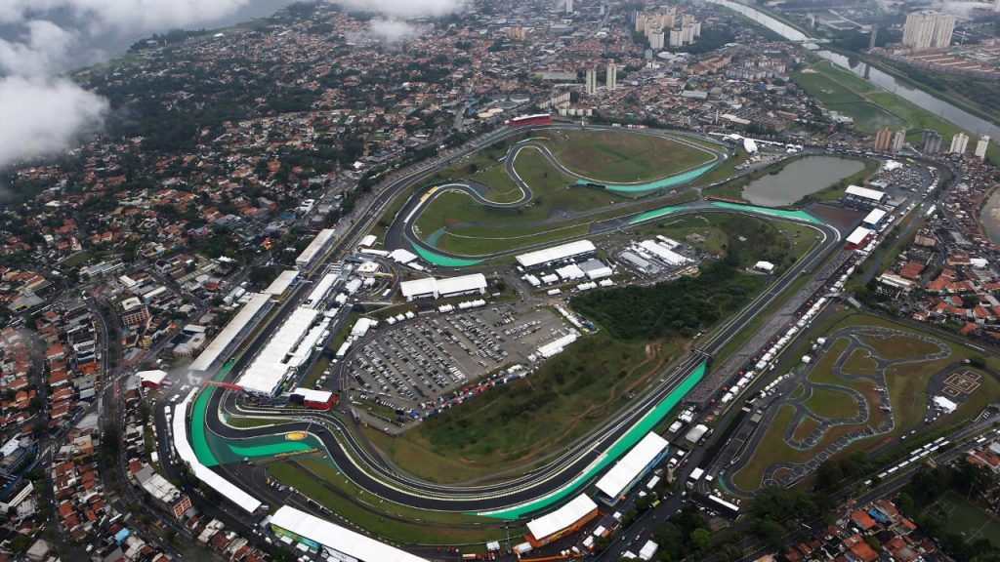
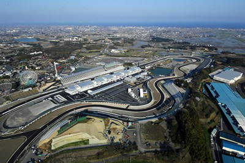

Circuit guide
A few of the most famous circuits from Formula One
Monaco Grand Prix

- Country: Monaco
- City: Monte Carlo
- Circuit: Circuit De Monaco
- First hosted: 1950
British Grand prix

- Country: Great Britain
- City: Silverstone
- Circuit: Silverstone Circuit
- First hosted: 1950
Belgian Grand Prix

- Country: Belgium
- City: Spa
- Circuit: Circuit de Spa Francorchamps
- First hosted: 1950
Italian Grand Prix

- Country: Italy
- City: Monza
- Circuit: Autodromo Nazionale di Monza
- First hosted: 1950
Brazilian Grand Prix

- Country: Brazil
- City: Sao Paulo
- Circuit: Autodromo Jose Carlos Pace
- First hosted: 1973
Japanese Grand Prix

- Country: Japan
- City: Suzuka
- Circuit: Suzuka International Racing Course
- First hosted: 1987